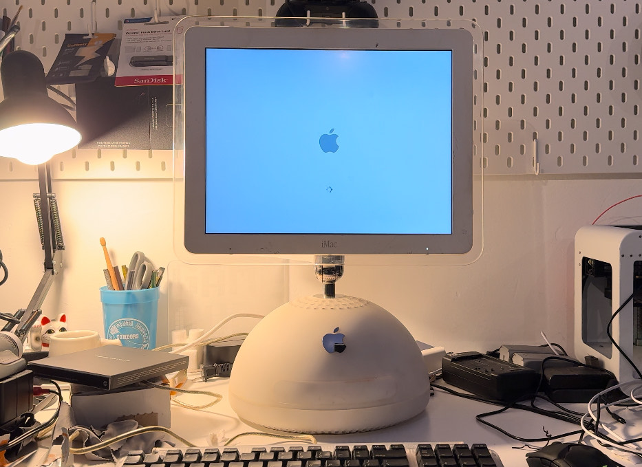

Down here you'll find my (Growing) collection of old iMacs.
The latest addition to my collection, this is an old early 2003 iMac G4 boasting a blazing fast single core 800 megahertz PPC G4 proccesor, and a whopping 512 mbs of RAM.
I picked this one up from the music teacher at my high-school, pretty random right? Whats even wirder is the fact that multiple files say it was last used in june of 2003, meaning that the school bought new 2000 dollar computers and only used them for half a year.
Now even though the G4 is over 20 years old I was supprised of how modern you could make the machine, through a little bit of elbo-grease (And DosDude1's software) I was able to get Mac OSX 10.5 installed and get this, browse the internet! Which if you put it like that sounds not so special but trust me old computers have the hardest time even getting the most basic of web-pages to load and most don't even support HTTPS which most sites use now adays.

And here it is, the first ever iMac. Probobly one of Apple's most recognizable products that not only saved the company but brought back Steve Jobs as CEO and what some might agure changed the course of computing.